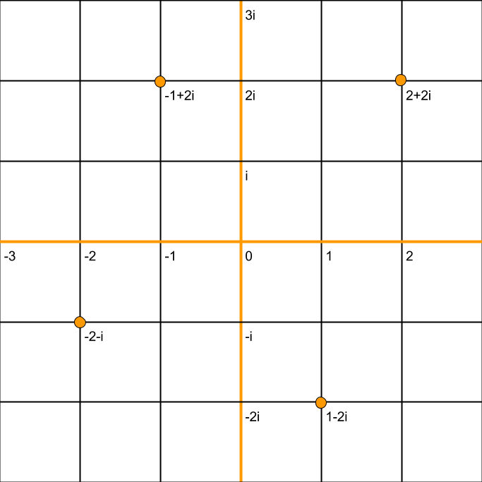
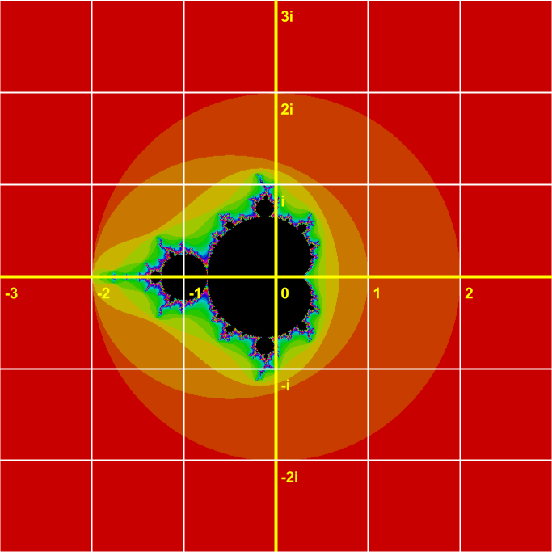

The Mandelbrot Set is A mathematical set of complex numbers, numbers that have a real component as well as an 'imaginary' component, which is a multiple of i, the square root of -1.
These complex numbers can be represented as points on the 'complex plane', where the real numbers are on the x axis, and the imaginary numbers are on the y axis.

The mandelbrot set is located thus:

The points colored in black (or whatever color you choose) are inside the set, and the colored points are outside the set.
But wait! How do you know which points are inside the set and which points aren't?
Well, for a point/complex number to be in the set, it must pass this test:
The number goes through an iterave process, repeated the amount of times you scecify in the iterations box.
Each time, it is squared, and has the original number added.
If, at any time during this process, the number becomes farther than 2 away from 0+0i, in other words, outside the colored circle, then it is not in the set, and is colored according to how many iterations it took to verify that it was outside the set.
Otherwise, it is aproximated to be inside the set, and is colored black, or whatever color you chose.